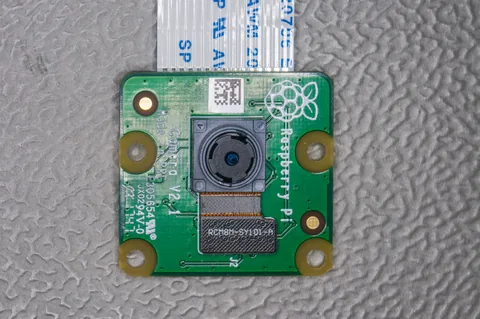
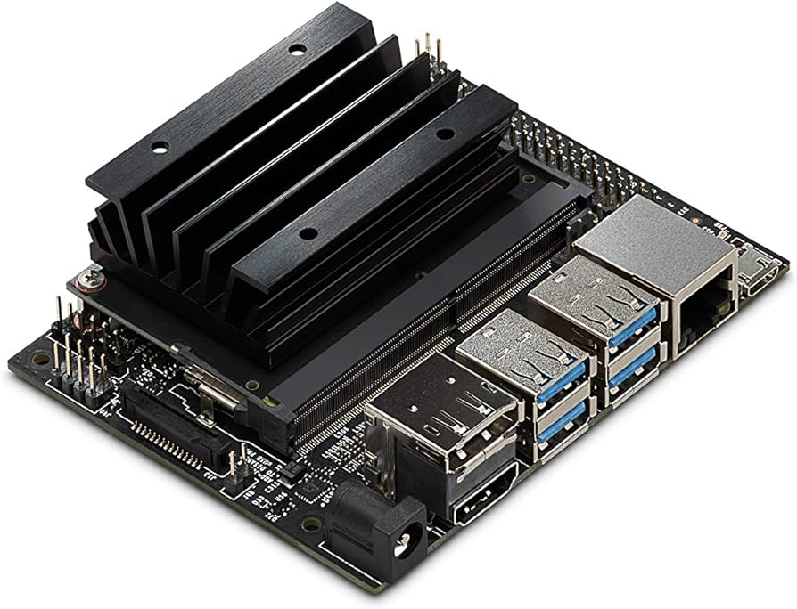
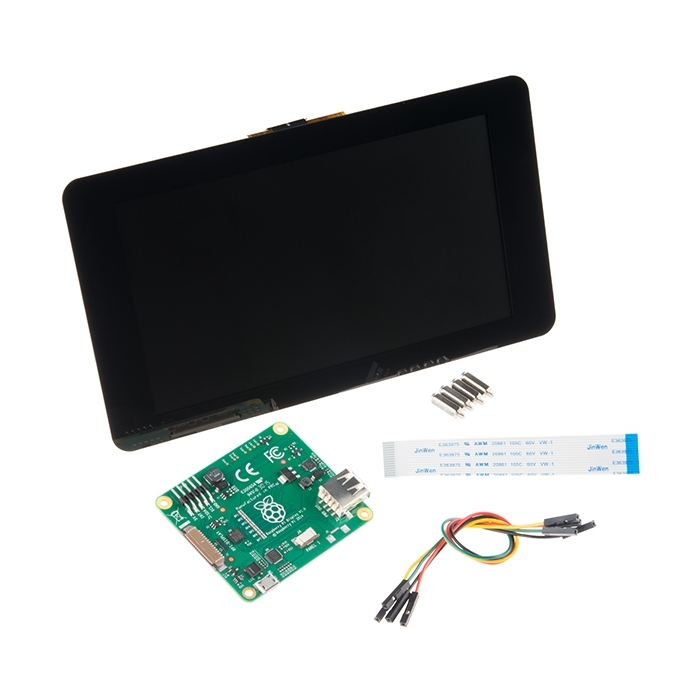
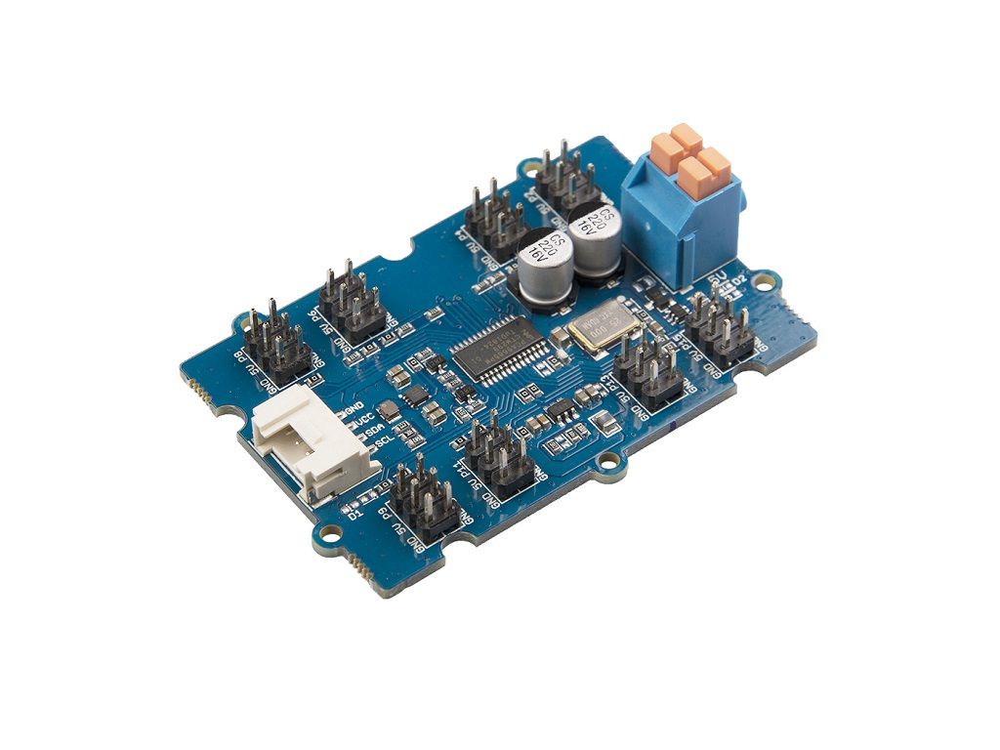
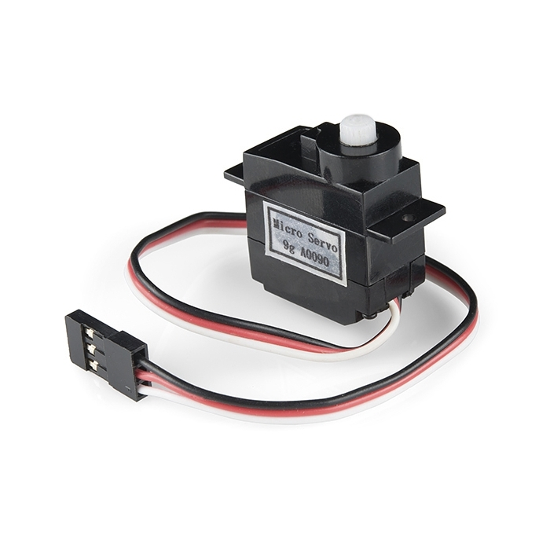
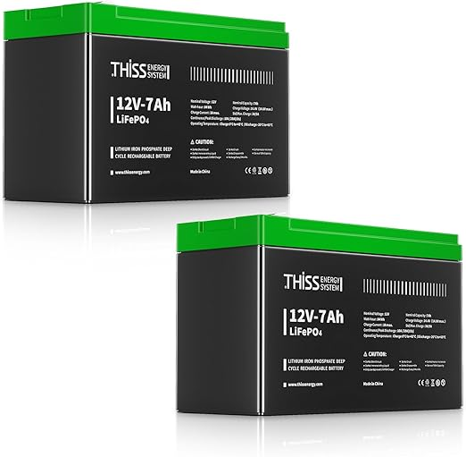

Cámara
IMX219 / Camera V2
Entrada visual por MIPI CSI para capturar el residuo y enviarlo al modelo.
Sistema ciberfísico definido
EcoHuella usa Jetson Nano como cerebro para ejecutar IA local, recibir imagen desde cámara CSI, mostrar el ícono de clasificación en pantalla y abrir el compartimento cuando el sensor de proximidad confirma que la mano u objeto está cerca.
Procesamiento de borde
La placa ejecuta el modelo MobileNetV2 CDMX, coordina el flujo de estados, envía feedback a la pantalla TFT y controla servos mediante un driver PWM I2C PCA9685. La arquitectura evita depender de un servidor externo y protege la privacidad al procesar imágenes localmente.

Componentes recomendados

Entrada visual por MIPI CSI para capturar el residuo y enviarlo al modelo.

Muestra logo, categoría, estado del sistema y confirmación de depósito.

Detecta distancia menor al umbral para autorizar la apertura.

Genera PWM estable para servos sin cargar directamente los GPIO.

Abre y cierra cada compartimento mediante bisagra y topes mecánicos.

Banco recargable con BMS integrada para energía de respaldo y pruebas en campo.
Conexión pin a pin
| Señal | Jetson Nano J41 | Dispositivo | Nota clave |
|---|---|---|---|
| I2C SDA | Pin 3 | PCA9685 SDA | Bus lógico a 3.3 V. |
| I2C SCL | Pin 5 | PCA9685 SCL | Dirección típica 0x40. |
| GND común | Pin 6 | Jetson, servos, sensor | Referencia común para lectura estable de sensores y control PWM. |
| TRIG | Pin 11 / GPIO17 | HC-SR04 TRIG | Salida 3.3 V desde Jetson. |
| ECHO | Pin 13 / GPIO27 | HC-SR04 ECHO | Usar divisor o level shifter: no conectar 5 V directo. |
| Cámara | Conector MIPI CSI | IMX219 | Conectar con la placa apagada y revisar orientación del cable. |
| Pantalla | HDMI / DSI / SPI | TFT 5–7" | HDMI simplifica montaje; SPI/DSI depende del módulo. |
| Servos | PCA9685, canales 0–15 | Compuertas | Usar regulador DC-DC de 5–6 V desde el banco LiFePO4. |
Energía del prototipo
La fuente recomendada es una batería LiFePO4 de hierro de litio de 12 V y 7 Ah, recargable y con BMS integrada. Su química es estable para mantenimiento del hogar, respaldo energético, almacenamiento solar y pruebas de campo como camping o instalaciones escolares.
Bus principal para distribuir energía dentro del prototipo.
Capacidad útil para demostraciones y ciclos de prueba prolongados.
Protección integrada para carga, descarga y operación recargable.
Regulación hacia 5 V para Jetson y 5–6 V para actuadores.
Cámara Raspberry Pi Camera V2 por Sven.petersen en Wikimedia Commons; HC-SR04, pantalla y servo por SparkFun; PCA9685 por Seeed Studio. Las imágenes de Jetson Nano, HDPE y batería LiFePO4 fueron proporcionadas en los archivos del proyecto.
{kind=link}